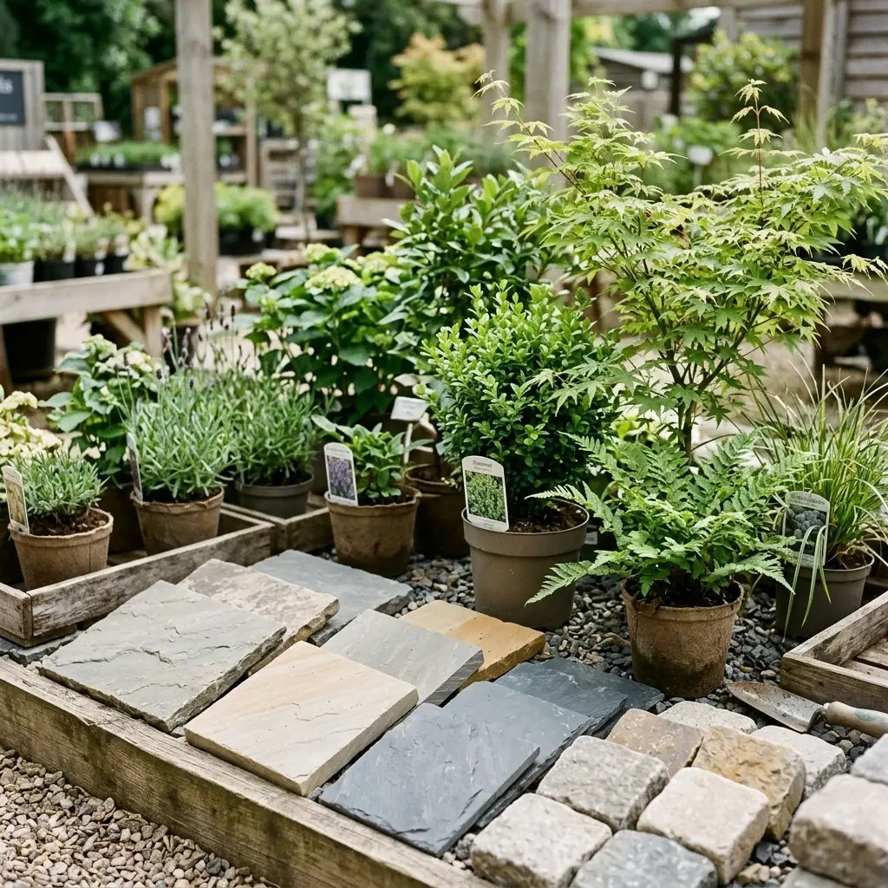
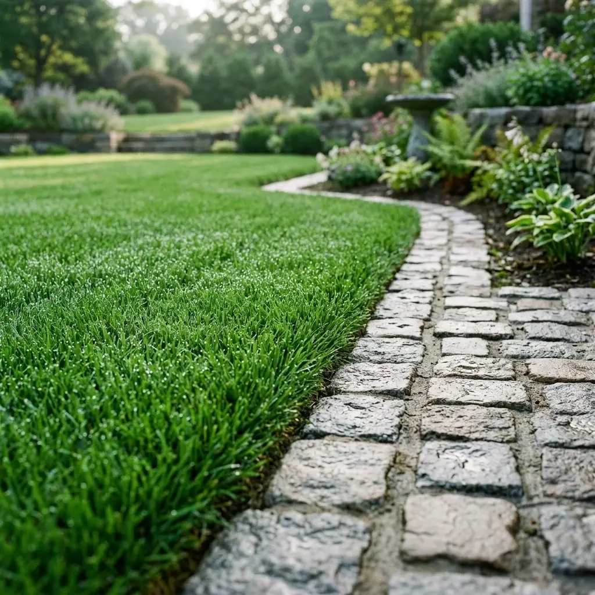
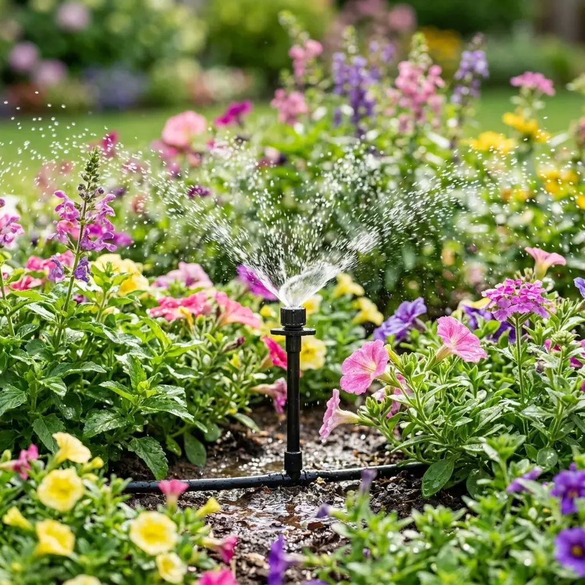
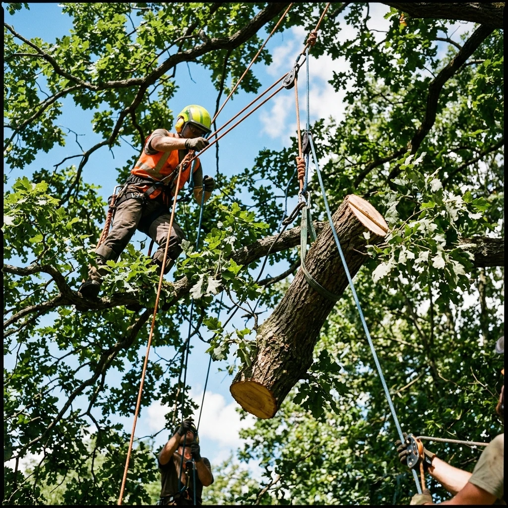
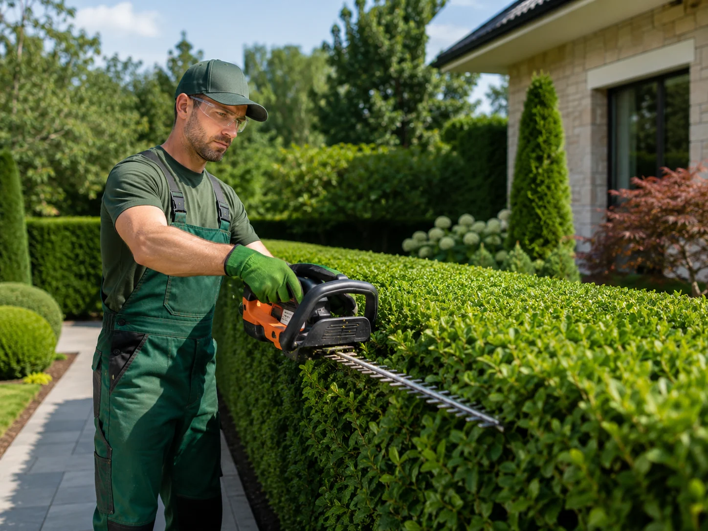
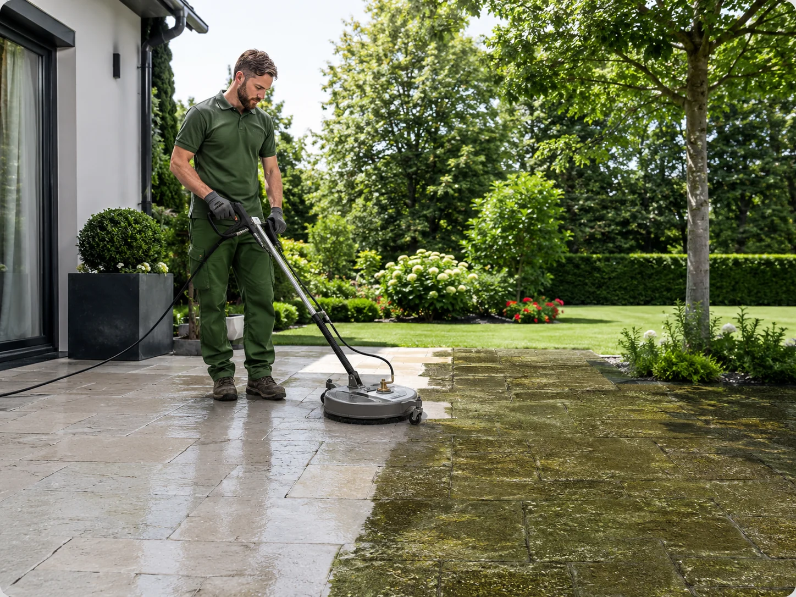

Basés à Plouhinec (56680), nous entretenons et aménageons les jardins de tout le département, de Lorient à La Gacilly et du littoral à Pontivy.
Pas de réponse au premier numéro ? Appelez le second, l'un de nous décroche toujours.
Artisan David S est installé au 10 Ldt Kerjean à Plouhinec (56680), entre la ria d'Étel et la rade de Lorient. De là, nous rayonnons sur tout le département : Vannes et le golfe, Auray et la côte des mégalithes, Lorient et sa rade à l'ouest, Pontivy et Ploërmel au centre, la presqu'île de Rhuys et Quiberon sur le littoral, jusqu'à Questembert et La Gacilly à l'est.
Nos équipes se déplacent avec le matériel complet — tondeuse autoportée, débroussailleuse, nacelle, broyeur et nettoyeur haute pression — afin de traiter le chantier en une seule venue. Le déplacement est gratuit dans tout le département pour l'établissement du devis.
Notre commune d'attache, entre la ria d'Étel et la petite mer de Gâvres : jardins de bord de mer exposés au vent, haies brise-vent et terrasses à démousser, où nous intervenons en quelques minutes, du simple passage de tonte à la refonte complète d'un jardin.
Dans la préfecture et autour du golfe du Morbihan, nous entretenons jardins de ville, maisons des quartiers résidentiels et lotissements, avec des passages réguliers ou une refonte complète du jardin.
À une vingtaine de minutes, les jardins en pente qui descendent vers le Loch et les murets de pierre autour de Saint-Goustan demandent un entretien soigné et des tailles précises.
Dans la ville reconstruite, les parcelles sont souvent petites et très arborées : taille de haies mitoyennes, entretien régulier et évacuation complète des déchets verts, sans encombrer la rue.
Au cœur du Morbihan, le long du Blavet, les grands terrains et les arbres anciens de bord de rivière nous amènent surtout pour de l'élagage, de l'abattage maîtrisé et du débroussaillage.
Sur la presqu'île de Rhuys, beaucoup de résidences secondaires : nous assurons l'entretien pendant votre absence, la taille des pins maritimes et la remise en état avant la saison.
Autour du lac au Duc, les grandes propriétés arborées réclament abattage, dessouchage et entretien de grandes surfaces avec notre matériel autoporté.
Sur les rives du Blavet, les terrains en pente se prêtent aux terrasses en paliers, aux murets de soutènement et aux plantations couvre-sol qui tiennent le talus.
Face à la rade de Lorient, les jardins de lotissement et les haies de lauriers ou de thuyas demandent une taille régulière : nous proposons des passages à l'année.
Vent, sel et embruns : sur la presqu'île, nous choisissons des végétaux qui tiennent le littoral (tamaris, pittosporum, escallonia) et nettoyons les terrasses verdies par l'humidité.
Au bord de l'Oust, les jardins de bourg et les vieux arbres des propriétés en schiste appellent des tailles douces, des massifs à recréer et des allées à reprendre.
À l'est du département, nous remettons en état des terrains de campagne laissés à l'abandon : débroussaillage, abattage des arbres dangereux et création d'un jardin simple à entretenir.
Maisons de vacances et jardins de bord de mer : entretien avant et après la saison, taille des haies de cyprès et nettoyage haute pression des terrasses et allées.
Entre la Laïta et l'océan, les grands jardins plantés de pins et de chênes nous occupent pour de l'élagage de sécurité, du ramassage d'aiguilles et de la taille de formation.
Aux portes de l'Ille-et-Vilaine, dans ce village d'artisans connu pour ses jardins fleuris, nous créons des massifs, entretenons les haies et soignons les jardins visibles depuis la rue.

Création de jardins à Vannes, Auray, Lorient et dans tout le Morbihan.
Découvrir →
Aménagement paysager à Vannes, Auray, Lorient et dans tout le Morbihan.
Découvrir →
Entretien d'espaces verts à Vannes, Auray, Lorient et dans tout le Morbihan.
Découvrir →
Élagage et abattage à Vannes, Auray, Lorient et dans tout le Morbihan.
Découvrir →
Taille de haies à Vannes, Auray, Lorient et dans tout le Morbihan.
Découvrir →
Nettoyage de terrasses à Vannes, Auray, Lorient et dans tout le Morbihan.
Découvrir →Appelez-nous : nous nous déplaçons gratuitement pour établir votre devis, partout dans le Morbihan.
Pas de réponse au premier numéro ? Appelez le second, l'un de nous décroche toujours.